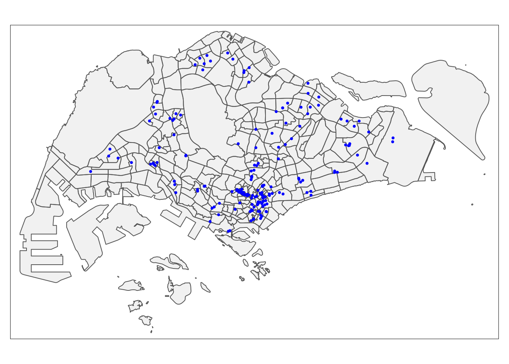
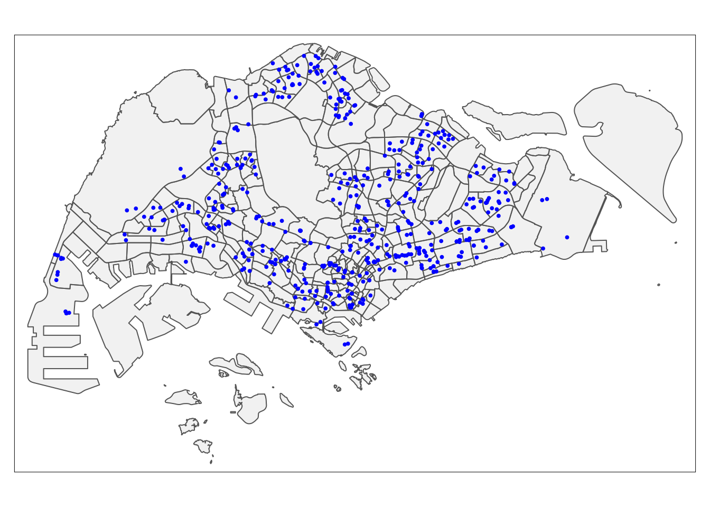
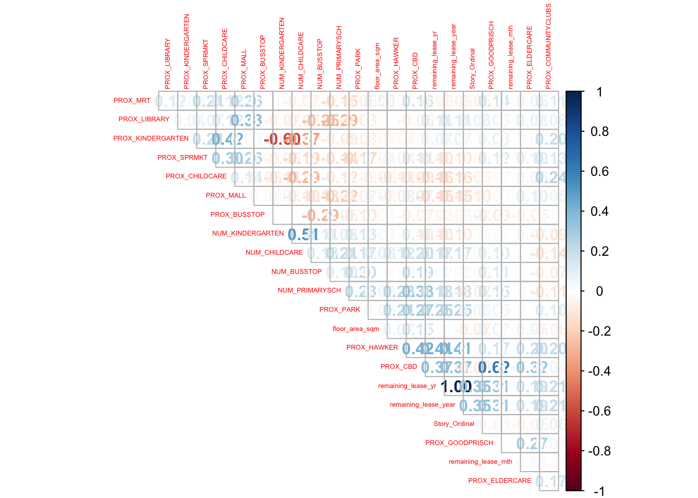
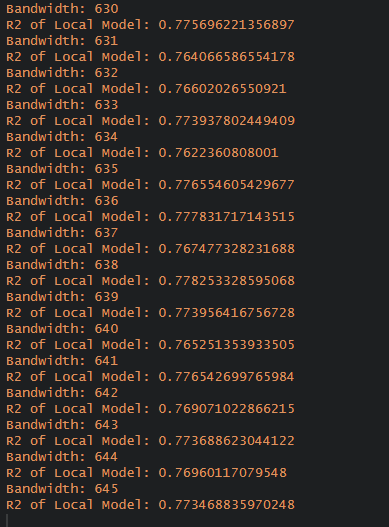
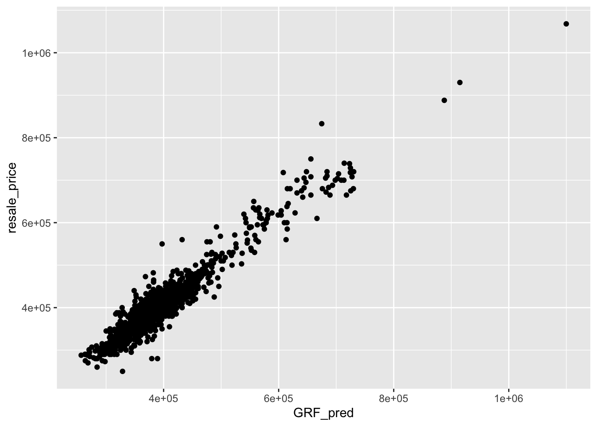
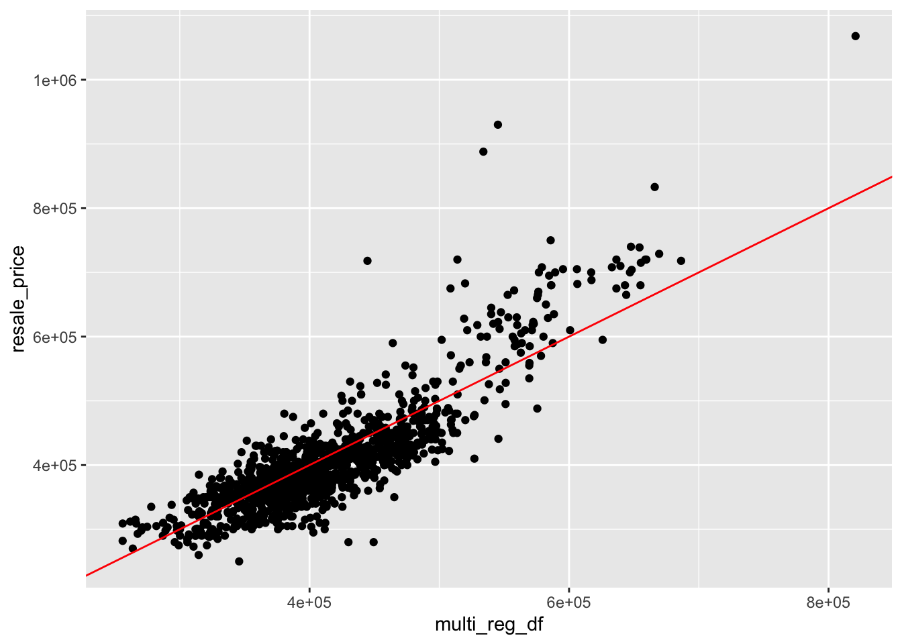
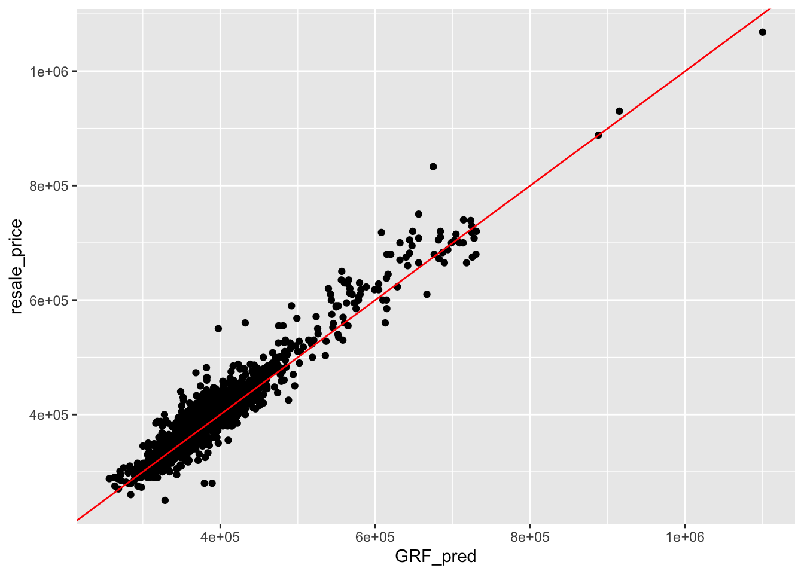

pacman::p_load('sf', 'tidyverse', 'tmap', 'spdep', 'onemapsgapi', 'units', 'matrixStats', 'readxl', 'jsonlite', 'olsrr', 'corrplot', 'ggpubr', 'GWmodel',
'devtools', 'kableExtra', 'plotly', 'ggthemes', 'ranger', 'Metrics')Take-home Exercise 3: Predicting HDB Public Housing Resale Pricies using Geographically Weighted Methods
1 Setting the scene
Several things influence housing costs. Some of them have a worldwide scope, such the overall health of a nation’s economy or the level of inflation. Some may focus more on the properties themselves. You can further divide these characteristics into structural and geographic ones.
Geographical Weighted Models were introduced for enhancing predictive model for housing resale prices as traditional price predictive models failed to take account the spatial correlation and heterogeneity in geographical aspects which caused inaccuracy and bias.
1.1 Loading the data
1.2 Data set used
datasets <- data.frame(
Type=c("Aspatial",
"Geospatial",
"Geospatial - Extracted",
"Geospatial - Extracted",
"Geospatial - Extracted",
"Geospatial - Extracted",
"Geospatial - Extracted",
"Geospatial - Extracted",
"Geospatial - Extracted",
"Geospatial - Selfsourced",
"Geospatial - Selfsourced",
"Geospatial - Selfsourced",
"Geospatial - Selfsourced",
"Geospatial - Selfsourced"),
Name=c("Resale Flat Prices",
"Master Plan 2019 Subzone Boundary (Web)",
"Childcare Services",
"Community Clubs",
"Eldercare Services",
"Hawker Centres",
"Kindergartens",
"Parks",
"Libraries",
"Bus Stop Locations Aug 2021",
"MRT & LRT Locations Aug 2021",
"Supermarkets",
"Shopping Mall SVY21 Coordinates",
"Primary School"),
Format=c(".csv",
".shp",
".shp",
".shp",
".shp",
".shp",
".shp",
".shp",
".shp",
".shp",
".kml",
".shp",
".shp",
".csv"),
Source=c("[data.gov.sg](https://data.gov.sg/dataset/resale-flat-prices)",
"[data.gov.sg](https://data.gov.sg/dataset/master-plan-2014-subzone-boundary-web)",
"[OneMap API](https://www.onemap.gov.sg/docs/)",
"[OneMap API](https://www.onemap.gov.sg/docs/)",
"[OneMap API](https://www.onemap.gov.sg/docs/)",
"[OneMap API](https://www.onemap.gov.sg/docs/)",
"[OneMap API](https://www.onemap.gov.sg/docs/)",
"[OneMap API](https://www.onemap.gov.sg/docs/)",
"[OneMap API](https://www.onemap.gov.sg/docs/)",
"[datamall.lta](https://datamall.lta.gov.sg/content/datamall/en/search_datasets.html?searchText=bus%20stop)",
"[data.gov](https://data.gov.sg/dataset/lta-mrt-station-exit)",
"[Onemap.gov](https://www.onemap.gov.sg/main/v2/essentialamenities)",
"[Valery Lim's Github](https://github.com/ValaryLim/Mall-Coordinates-Web-Scraper/blob/master/mall_coordinates_updated.csv)",
"[data.gov](https://data.gov.sg/dataset/school-directory-and-information)")
)
library(knitr)
library(kableExtra)
kable(datasets, caption="Datasets Used") %>%
kable_material("hover", latex_options = "scale_down")| Type | Name | Format | Source |
|---|---|---|---|
| Aspatial | Resale Flat Prices | .csv | [data.gov.sg](https://data.gov.sg/dataset/resale-flat-prices) |
| Geospatial | Master Plan 2019 Subzone Boundary (Web) | .shp | [data.gov.sg](https://data.gov.sg/dataset/master-plan-2014-subzone-boundary-web) |
| Geospatial - Extracted | Childcare Services | .shp | [OneMap API](https://www.onemap.gov.sg/docs/) |
| Geospatial - Extracted | Community Clubs | .shp | [OneMap API](https://www.onemap.gov.sg/docs/) |
| Geospatial - Extracted | Eldercare Services | .shp | [OneMap API](https://www.onemap.gov.sg/docs/) |
| Geospatial - Extracted | Hawker Centres | .shp | [OneMap API](https://www.onemap.gov.sg/docs/) |
| Geospatial - Extracted | Kindergartens | .shp | [OneMap API](https://www.onemap.gov.sg/docs/) |
| Geospatial - Extracted | Parks | .shp | [OneMap API](https://www.onemap.gov.sg/docs/) |
| Geospatial - Extracted | Libraries | .shp | [OneMap API](https://www.onemap.gov.sg/docs/) |
| Geospatial - Selfsourced | Bus Stop Locations Aug 2021 | .shp | [datamall.lta](https://datamall.lta.gov.sg/content/datamall/en/search_datasets.html?searchText=bus%20stop) |
| Geospatial - Selfsourced | MRT & LRT Locations Aug 2021 | .kml | [data.gov](https://data.gov.sg/dataset/lta-mrt-station-exit) |
| Geospatial - Selfsourced | Supermarkets | .shp | [Onemap.gov](https://www.onemap.gov.sg/main/v2/essentialamenities) |
| Geospatial - Selfsourced | Shopping Mall SVY21 Coordinates | .shp | [Valery Lim's Github](https://github.com/ValaryLim/Mall-Coordinates-Web-Scraper/blob/master/mall_coordinates_updated.csv) |
| Geospatial - Selfsourced | Primary School | .csv | [data.gov](https://data.gov.sg/dataset/school-directory-and-information) |
2 Data Preparation
2.1 Aspatial data
Loading Resale Data
resale <- read_csv("data/aspatial/resale-flat-prices-based-on-registration-date-from-jan-2017-onwards.csv")glimpse(resale)Rows: 148,680
Columns: 11
$ month <chr> "2017-01", "2017-01", "2017-01", "2017-01", "2017-…
$ town <chr> "ANG MO KIO", "ANG MO KIO", "ANG MO KIO", "ANG MO …
$ flat_type <chr> "2 ROOM", "3 ROOM", "3 ROOM", "3 ROOM", "3 ROOM", …
$ block <chr> "406", "108", "602", "465", "601", "150", "447", "…
$ street_name <chr> "ANG MO KIO AVE 10", "ANG MO KIO AVE 4", "ANG MO K…
$ storey_range <chr> "10 TO 12", "01 TO 03", "01 TO 03", "04 TO 06", "0…
$ floor_area_sqm <dbl> 44, 67, 67, 68, 67, 68, 68, 67, 68, 67, 68, 67, 67…
$ flat_model <chr> "Improved", "New Generation", "New Generation", "N…
$ lease_commence_date <dbl> 1979, 1978, 1980, 1980, 1980, 1981, 1979, 1976, 19…
$ remaining_lease <chr> "61 years 04 months", "60 years 07 months", "62 ye…
$ resale_price <dbl> 232000, 250000, 262000, 265000, 265000, 275000, 28…On a personal note, I am currently staying in a 3 room flat at Bedok, and my family is planning to move soon. Hence, I have decided to scope it down to 3 room flats so that I can roughly gauge how much my family can resell the house! It will be interesting to look at how various geographical factors affect resale prices :-)
As such , we will be looking at 3 room flats, within January of 2021 to February of 2023, which will be separated again later on. This is done by using filter() on flat_type and month.
resale_sub <- resale %>%
filter(flat_type == "3 ROOM",
month >= "2021-01" & month <= "2023-02")To double confirm that we extracted what we really want, we will be using unique() to view what we extracted. As seen below, we have extracted the correct range for the dates, and the flat_type of 3 Room.
unique(resale_sub$month) [1] "2021-01" "2021-02" "2021-03" "2021-04" "2021-05" "2021-06" "2021-07"
[8] "2021-08" "2021-09" "2021-10" "2021-11" "2021-12" "2022-01" "2022-02"
[15] "2022-03" "2022-04" "2022-05" "2022-06" "2022-07" "2022-08" "2022-09"
[22] "2022-10" "2022-11" "2022-12" "2023-01" "2023-02"unique(resale_sub$flat_type)[1] "3 ROOM"glimpse(resale_sub)Rows: 13,780
Columns: 11
$ month <chr> "2021-01", "2021-01", "2021-01", "2021-01", "2021-…
$ town <chr> "ANG MO KIO", "ANG MO KIO", "ANG MO KIO", "ANG MO …
$ flat_type <chr> "3 ROOM", "3 ROOM", "3 ROOM", "3 ROOM", "3 ROOM", …
$ block <chr> "331", "534", "561", "170", "463", "542", "170", "…
$ street_name <chr> "ANG MO KIO AVE 1", "ANG MO KIO AVE 10", "ANG MO K…
$ storey_range <chr> "04 TO 06", "04 TO 06", "01 TO 03", "07 TO 09", "0…
$ floor_area_sqm <dbl> 68, 68, 68, 60, 68, 68, 60, 73, 67, 67, 68, 68, 73…
$ flat_model <chr> "New Generation", "New Generation", "New Generatio…
$ lease_commence_date <dbl> 1981, 1980, 1980, 1986, 1980, 1981, 1986, 1976, 19…
$ remaining_lease <chr> "59 years", "58 years 02 months", "58 years 01 mon…
$ resale_price <dbl> 260000, 265000, 265000, 268000, 268000, 270000, 27…2.1.2 Aspatial Wrangling
As we can see from the resale_sub, the variable remaining lease and lease commence date essentially provides the same information. We will only be including remaining lease, as it directly tells us the remaining year. Most importantly, this will help us to ensure that the variables are not perfectly collinear during our regression later!
resale_sub <- resale_sub %>%
select(-lease_commence_date)Additionally, after looking at the resale_sub variables, we notice that remaining lease is <chr>. We would want it to be numeric, as it will be beneficial for us later on. We will have to first split the months and years in the variable remaining_lease.
resale_sub <- resale_sub %>%
mutate(remaining_lease_yr = as.integer(str_sub(remaining_lease, 0, 2))) %>%
mutate(remaining_lease_mth = as.integer(str_sub(remaining_lease, 9, 11)))glimpse(resale_sub)Rows: 13,780
Columns: 12
$ month <chr> "2021-01", "2021-01", "2021-01", "2021-01", "2021-…
$ town <chr> "ANG MO KIO", "ANG MO KIO", "ANG MO KIO", "ANG MO …
$ flat_type <chr> "3 ROOM", "3 ROOM", "3 ROOM", "3 ROOM", "3 ROOM", …
$ block <chr> "331", "534", "561", "170", "463", "542", "170", "…
$ street_name <chr> "ANG MO KIO AVE 1", "ANG MO KIO AVE 10", "ANG MO K…
$ storey_range <chr> "04 TO 06", "04 TO 06", "01 TO 03", "07 TO 09", "0…
$ floor_area_sqm <dbl> 68, 68, 68, 60, 68, 68, 60, 73, 67, 67, 68, 68, 73…
$ flat_model <chr> "New Generation", "New Generation", "New Generatio…
$ remaining_lease <chr> "59 years", "58 years 02 months", "58 years 01 mon…
$ resale_price <dbl> 260000, 265000, 265000, 268000, 268000, 270000, 27…
$ remaining_lease_yr <int> 59, 58, 58, 64, 58, 59, 64, 54, 56, 55, 59, 58, 55…
$ remaining_lease_mth <int> NA, 2, 1, 2, 2, 1, NA, 4, 10, 4, 1, 8, 7, 9, 4, 5,…From above, we notice that there are NA values for remaining lease month. We will replace it with 0 by identifying it with is.na()
resale_sub$remaining_lease_mth[is.na(resale_sub$remaining_lease_mth)] <- 0Our main goal here is to convert remaining lease months into years, and add them together under remaining_lease_year. we will first divide the remaining lease month variable by 12.
resale_sub$remaining_lease_mth <- resale_sub$remaining_lease_mth/12Then, we will combine them together under the new variable remaining lease year.
resale_sub <- resale_sub %>%
mutate(resale_sub, remaining_lease_year = rowSums(resale_sub[, c("remaining_lease_yr", "remaining_lease_mth")]))By referencing to our favorite senior, Megan, she advised that we replace “SAINT” with “ST”, as onemap spells it that way in the variable street_name, which will be a bit confusing. We can change that by using the code chunk below
resale_sub$street_name <- gsub("ST\\.", "SAINT", resale_sub$street_name)Similarly, by referencing Megan’s work, we notice that there are no coordinates provided in the resale data. we will have to use a geocoding function as shown below.
The steps are as follows:
Combine the block and street name into an address
Pass the address as the searchVal in our query
Send the query to OneMapSG search Note: Since we don’t need all the address details, we can set
getAddrDetailsas ‘N’Convert response (JSON object) to text
Saving the response in text form as a data frame
retaining the latitude and longitude for our output
library(httr)
library(rjson)
geocode <- function(block, streetname) {
base_url <- "https://developers.onemap.sg/commonapi/search"
address <- paste(block, streetname, sep = " ")
query <- list("searchVal" = address,
"returnGeom" = "Y",
"getAddrDetails" = "N",
"pageNum" = "1")
res <- GET(base_url, query = query)
restext<-content(res, as="text")
output <- fromJSON(restext) %>%
as.data.frame %>%
select(results.LATITUDE, results.LONGITUDE)
return(output)
}After creating the function, we will have to make sure that the iterations are able to run through the whole resale data to ensure that every entry gets a coordinate. As such, we will be creating a loop
resale_sub$LATITUDE <- 0
resale_sub$LONGITUDE <- 0
for (i in 1:nrow(resale_sub)){
temp_output <- geocode(resale_sub[i, 4], resale_sub[i, 5])
resale_sub$LATITUDE[i] <- temp_output$results.LATITUDE
resale_sub$LONGITUDE[i] <- temp_output$results.LONGITUDE
}Let us save it into a RDS object
saveRDS(resale_sub, file="resale_sub", compress=FALSE)We will then assign the RDS object to resale_sub
resale_sub <- readRDS("resale_sub")2.1.3 Creating ordinal arrangement for floor level
We will create an ordinal column for the floor level for the purpose of our analysis later on! We will first use unique() to identify all of the values from storey_range
unique(resale_sub$storey_range) [1] "04 TO 06" "01 TO 03" "07 TO 09" "10 TO 12" "13 TO 15" "28 TO 30"
[7] "19 TO 21" "16 TO 18" "25 TO 27" "22 TO 24" "34 TO 36" "40 TO 42"
[13] "31 TO 33" "37 TO 39" "46 TO 48" "43 TO 45"We will then write it down into a vector, and assign it to levels. After that, we will assign story_ordinal by using seq_along() and changing story_ordinal into numeric using as.numeric().
levels <- c("01 TO 03", "04 TO 06", "07 TO 09", "10 TO 12", "13 TO 15", "16 TO 18", "19 TO 21", "22 TO 24", "25 TO 27", "28 TO 30", "31 TO 33", "34 TO 36", "37 TO 39", "40 TO 42", "43 TO 45", "46 TO 48", "49 TO 51")
story_ordinal <- seq_along(levels)
resale_sub$Story_Ordinal <- story_ordinal[match(resale_sub$storey_range, levels)]
levels(resale_sub$Story_Ordinal) <- levels
resale_sub <- resale_sub |>
mutate(Story_Ordinal=as.numeric(Story_Ordinal))2.1.4 Mutating remaining columns
We noticed that month is still <chr>, which is able to be changed by as.Date. By referencing to this website, %Y denotes the year with century, %m for month, and %d for day.
resale_sub <- resale_sub %>%
mutate(month = as.Date(paste(month, "-01"), format ="%Y-%m-%d"))2.1.5 Checking for duplicates
Finally, let us check for duplicates. We are good to go!
sum(is.na(resale_sub$LATITUDE))[1] 0sum(is.na(resale_sub$LONGITUDE))[1] 0Geospatial data
As mentioned above, we will be extracting geospatial data from Onemap. the codes used below will require the onemapsgapi package, which is already loaded in 1.1. I will break down the steps to extract data from Onemap as simple as possible!
First, create an account for Onemap
Fill up your details in this link (with the details sent to your email)
Ready to go after following the code chunks below!
Do note that this is purely for reference, you will have to type in your own email and password to load your token!
Type this command into the console, with your own email and password
run_token <- get_token("email", "password")Next, since I love food, I will be giving an example to extract hawker data from Onemap, using this code chunk.
themes <- search_themes(run_token, "hawkercentre")We will use the following function to extract data from Onemap. Lets assign it into hawker.
hawkercentre <- get_theme(run_token, "hawkercentre")And of course, our favorite part, ensuring that our spatial data have the correct ESPG CRS, which is 3414. We will also need to transform it into sf using st_as_sf(). Since we will be dealing with various extracted data, we do not want to keep extracting it each time we run or render the page. Hence, we will be using st_write() to write the sf object to file or database!
hawkercentre_sf <- st_as_sf(hawkercentre, coords = c("Lng", "Lat"), crs = 4326) %>%
st_transform(crs = 3414)
st_write(obj = hawkercentre_sf,
dsn = "data/geospatial/extracted",
layer = "hawkercentre",
driver = "ESRI Shapefile")We can just repeat the steps above for the following variables. For the scope of this assignment, we will be extracting the following:
childcare
community clubs
elder care
kindergartens
libraries
parks
I have already extracted the data beforehand, so let us proceed!
(Note that we have already extracted hawker centers!)
For reference, i will be putting the code below to extract the data from onemap
childcare <- get_theme(token,"childcare")
childcare_sf <- st_as_sf(childcare, coords = c("Lng", "Lat"), crs = 4326) %>%
st_transform(crs = 3414)
st_write(obj = childcare_sf,
dsn = "data/geospatial/extracted",
layer = "childcare",
driver = "ESRI Shapefile")communityclubs<- get_theme(token,"communityclubs")
communityclubs_sf <- st_as_sf(childcare, coords = c("Lng", "Lat"), crs = 4326) %>%
st_transform(crs = 3414)
st_write(obj = communityclubs_sf,
dsn = "data/geospatial/extracted",
layer = "communityclubs",
driver = "ESRI Shapefile")eldercare <- get_theme(token,"eldercare")
eldercare_sf <- st_as_sf(eldercare, coords=c("Lng", "Lat"), crs = 4326) %>%
st_transform(crs = 3414)
st_write(obj = eldercare_sf,
dsn = "data/geospatial/extracted",
layer = "eldercare",
driver = "ESRI Shapefile")kindergartens <- get_theme(token,"kindergartens")
kindergartens_sf <- st_as_sf(kindergartens, coords=c("Lng", "Lat"), crs= 4326) %>%
st_transform(crs = 3414)
st_write(obj = kindergartens_sf,
dsn = "data/geospatial/extracted",
layer = "kindergartens",
driver = "ESRI Shapefile")library <- get_theme(token,"libraries")
library_sf <- st_as_sf(library, coords=c("Lng", "Lat"), crs = 4326) %>%
st_transform(crs = 3414)
st_write(obj = library_sf,
dsn = "data/geospatial/extracted",
layer = "libraries",
driver = "ESRI Shapefile")parks <- get_theme(token,"nationalparks")
parks_sf <- st_as_sf(parks, coords=c("Lng", "Lat"), crs = 4326) %>%
st_transform(crs = 3414)
st_write(obj = parks_sf,
dsn = "data/geospatial/extracted",
layer = "parks",
driver = "ESRI Shapefile")2.2.1 Reading Geospatial Data
hawkercentre_sf <- st_read(dsn = "data/geospatial/extracted", layer = "hawkercentre")Reading layer `hawkercentre' from data source
`/Users/keredpoh/Desktop/keredpoh/IS415-GAA/Take-home_Ex/Take-home_Ex03/data/geospatial/extracted'
using driver `ESRI Shapefile'
Simple feature collection with 125 features and 18 fields
Geometry type: POINT
Dimension: XY
Bounding box: xmin: 12874.19 ymin: 28355.97 xmax: 45241.4 ymax: 47850.43
Projected CRS: SVY21 / Singapore TMeldercare_sf <- st_read(dsn = "data/geospatial/extracted", layer = "eldercare")Reading layer `eldercare' from data source
`/Users/keredpoh/Desktop/keredpoh/IS415-GAA/Take-home_Ex/Take-home_Ex03/data/geospatial/extracted'
using driver `ESRI Shapefile'
Simple feature collection with 133 features and 4 fields
Geometry type: POINT
Dimension: XY
Bounding box: xmin: 14481.92 ymin: 28218.43 xmax: 41665.14 ymax: 46804.9
Projected CRS: SVY21 / Singapore TMchildcare_sf <- st_read(dsn = "data/geospatial/extracted", layer = "childcare")Reading layer `childcare' from data source
`/Users/keredpoh/Desktop/keredpoh/IS415-GAA/Take-home_Ex/Take-home_Ex03/data/geospatial/extracted'
using driver `ESRI Shapefile'
Simple feature collection with 1925 features and 5 fields
Geometry type: POINT
Dimension: XY
Bounding box: xmin: 11810.03 ymin: 25596.33 xmax: 45404.24 ymax: 49300.88
Projected CRS: SVY21 / Singapore TMcommunityclubs_sf <- st_read(dsn = "data/geospatial/extracted", layer = "communityclubs")Reading layer `communityclubs' from data source
`/Users/keredpoh/Desktop/keredpoh/IS415-GAA/Take-home_Ex/Take-home_Ex03/data/geospatial/extracted'
using driver `ESRI Shapefile'
Simple feature collection with 125 features and 11 fields
Geometry type: POINT
Dimension: XY
Bounding box: xmin: 12308.4 ymin: 28593.37 xmax: 42008.87 ymax: 48958.52
Projected CRS: SVY21 / Singapore TMkindergartens_sf <- st_read(dsn = "data/geospatial/extracted", layer = "kindergartens")Reading layer `kindergartens' from data source
`/Users/keredpoh/Desktop/keredpoh/IS415-GAA/Take-home_Ex/Take-home_Ex03/data/geospatial/extracted'
using driver `ESRI Shapefile'
Simple feature collection with 448 features and 5 fields
Geometry type: POINT
Dimension: XY
Bounding box: xmin: 11909.7 ymin: 25596.33 xmax: 43395.47 ymax: 48562.06
Projected CRS: SVY21 / Singapore TMlibrary_sf <- st_read(dsn = "data/geospatial/extracted", layer = "libraries")Reading layer `libraries' from data source
`/Users/keredpoh/Desktop/keredpoh/IS415-GAA/Take-home_Ex/Take-home_Ex03/data/geospatial/extracted'
using driver `ESRI Shapefile'
Simple feature collection with 31 features and 13 fields
Geometry type: POINT
Dimension: XY
Bounding box: xmin: 13665.24 ymin: 27383.57 xmax: 40922.89 ymax: 47759.75
Projected CRS: SVY21 / Singapore TMparks_sf <- st_read(dsn = "data/geospatial/extracted", layer = "nationalparks")Reading layer `nationalparks' from data source
`/Users/keredpoh/Desktop/keredpoh/IS415-GAA/Take-home_Ex/Take-home_Ex03/data/geospatial/extracted'
using driver `ESRI Shapefile'
Simple feature collection with 421 features and 2 fields
Geometry type: POINT
Dimension: XY
Bounding box: xmin: 12374.75 ymin: 21917.81 xmax: 52533.09 ymax: 49296.46
Projected CRS: SVY21 / Singapore TMmpsz_sf <- st_read(dsn = "data/geospatial/map", layer = "MP14_SUBZONE_WEB_PL")Reading layer `MP14_SUBZONE_WEB_PL' from data source
`/Users/keredpoh/Desktop/keredpoh/IS415-GAA/Take-home_Ex/Take-home_Ex03/data/geospatial/map'
using driver `ESRI Shapefile'
Simple feature collection with 323 features and 15 fields
Geometry type: MULTIPOLYGON
Dimension: XY
Bounding box: xmin: 2667.538 ymin: 15748.72 xmax: 56396.44 ymax: 50256.33
Projected CRS: SVY21busstop_sf <- st_read(dsn = "data/geospatial/sourced", layer = "BusStop")Reading layer `BusStop' from data source
`/Users/keredpoh/Desktop/keredpoh/IS415-GAA/Take-home_Ex/Take-home_Ex03/data/geospatial/sourced'
using driver `ESRI Shapefile'
Simple feature collection with 5159 features and 3 fields
Geometry type: POINT
Dimension: XY
Bounding box: xmin: 3970.122 ymin: 26482.1 xmax: 48284.56 ymax: 52983.82
Projected CRS: SVY21goodprisch_sf <- st_read(dsn = "data/geospatial/sourced", layer = "goodprimarysch")Reading layer `goodprimarysch' from data source
`/Users/keredpoh/Desktop/keredpoh/IS415-GAA/Take-home_Ex/Take-home_Ex03/data/geospatial/sourced'
using driver `ESRI Shapefile'
Simple feature collection with 9 features and 2 fields
Geometry type: POINT
Dimension: XY
Bounding box: xmin: 103.7611 ymin: 1.305285 xmax: 103.937 ymax: 1.34968
Geodetic CRS: WGS 84mrt_sf <- st_read(dsn = "data/geospatial/sourced", layer = "mrt")Reading layer `mrt' from data source
`/Users/keredpoh/Desktop/keredpoh/IS415-GAA/Take-home_Ex/Take-home_Ex03/data/geospatial/sourced'
using driver `ESRI Shapefile'
Simple feature collection with 474 features and 2 fields
Geometry type: POINT
Dimension: XY
Bounding box: xmin: 103.6368 ymin: 1.264972 xmax: 103.9893 ymax: 1.449157
Geodetic CRS: WGS 84prisch_sf <- st_read(dsn = "data/geospatial/sourced", layer = "primarysch")Reading layer `primarysch' from data source
`/Users/keredpoh/Desktop/keredpoh/IS415-GAA/Take-home_Ex/Take-home_Ex03/data/geospatial/sourced'
using driver `ESRI Shapefile'
Simple feature collection with 183 features and 2 fields
Geometry type: POINT
Dimension: XY
Bounding box: xmin: 103.6878 ymin: 1.274958 xmax: 103.9628 ymax: 1.456608
Geodetic CRS: WGS 84shoppingmall_sf <- st_read(dsn = "data/geospatial/sourced", layer = "shoppingmall")Reading layer `shoppingmall' from data source
`/Users/keredpoh/Desktop/keredpoh/IS415-GAA/Take-home_Ex/Take-home_Ex03/data/geospatial/sourced'
using driver `ESRI Shapefile'
Simple feature collection with 184 features and 1 field
Geometry type: POINT
Dimension: XY
Bounding box: xmin: 103.6784 ymin: 1.263797 xmax: 103.9897 ymax: 1.448227
Geodetic CRS: WGS 84supermarket_sf <- st_read(dsn = "data/geospatial/sourced", layer = "SUPERMARKETS")Reading layer `SUPERMARKETS' from data source
`/Users/keredpoh/Desktop/keredpoh/IS415-GAA/Take-home_Ex/Take-home_Ex03/data/geospatial/sourced'
using driver `ESRI Shapefile'
Simple feature collection with 526 features and 8 fields
Geometry type: POINT
Dimension: XY
Bounding box: xmin: 4901.188 ymin: 25529.08 xmax: 46948.22 ymax: 49233.6
Projected CRS: SVY212.2.2 Converting Self-sourced data
As we all know, we have yet to change our out-sourced data to the correct crs, which is 3414. Let us change it below using st_transform()! Do note that we do not need to do this all the time, especially when the data is already in the correct CRS. But in this case, all of the data are not.
busstop_sf <- busstop_sf %>%
st_transform(3414)goodprisch_sf <- goodprisch_sf %>%
st_transform(3414)mrt_sf <- mrt_sf %>%
st_transform(3414)prisch_sf <- prisch_sf %>%
st_transform(3414)shoppingmall_sf <- shoppingmall_sf %>%
st_transform(3414)supermarket_sf <- supermarket_sf %>%
st_transform(3414)2.2.3 Checking for invalid geometries
We will be checking invalid geometries using the length(), which() and st_is_valid() functions.
length(which(st_is_valid(hawkercentre_sf) == FALSE))[1] 0length(which(st_is_valid(communityclubs_sf) == FALSE))[1] 0length(which(st_is_valid(eldercare_sf) == FALSE))[1] 0length(which(st_is_valid(childcare_sf) == FALSE))[1] 0length(which(st_is_valid(kindergartens_sf) == FALSE))[1] 0length(which(st_is_valid(library_sf) == FALSE))[1] 0length(which(st_is_valid(parks_sf) == FALSE))[1] 0length(which(st_is_valid(mpsz_sf) == FALSE))[1] 9length(which(st_is_valid(busstop_sf) == FALSE))[1] 0length(which(st_is_valid(goodprisch_sf) == FALSE))[1] 0length(which(st_is_valid(mrt_sf) == FALSE))[1] 0length(which(st_is_valid(prisch_sf) == FALSE))[1] 0length(which(st_is_valid(shoppingmall_sf) == FALSE))[1] 0length(which(st_is_valid(supermarket_sf) == FALSE))[1] 0Alright, that aside, we notice that the basemap have a few invalid geometries. This can be corrected using st_make_valid()
mpsz_sf <- st_make_valid(mpsz_sf)2.3.4 Selecting name column
As we only need the name and geometry column, we will use the select() function.
hawkercentre_sf <- hawkercentre_sf %>%
select(1)communityclubs_sf <- communityclubs_sf %>%
select(1)eldercare_sf <- eldercare_sf %>%
select(1)childcare_sf <- childcare_sf %>%
select(1)kindergartens_sf <- kindergartens_sf %>%
select(1)library_sf <- library_sf %>%
select(1)parks_sf <- parks_sf %>%
select(1)busstop_sf <- busstop_sf %>%
select(1)goodprisch_sf <- goodprisch_sf %>%
select(1)mrt_sf <- mrt_sf %>%
select(1)prisch_sf <- prisch_sf %>%
select(1)shoppingmall_sf <- shoppingmall_sf %>%
select(1)supermarket_sf <- supermarket_sf %>%
select(1)2.3.5 Checking for missing values
What is more scary than missing geometries? Missing values, of course! That is a huge no no. Let us check missing values with is.na().
hawkercentre_sf[rowSums(is.na(hawkercentre_sf))!=0,]Simple feature collection with 0 features and 1 field
Bounding box: xmin: NA ymin: NA xmax: NA ymax: NA
Projected CRS: SVY21 / Singapore TM
[1] NAME geometry
<0 rows> (or 0-length row.names)communityclubs_sf[rowSums(is.na(communityclubs_sf))!=0,]Simple feature collection with 0 features and 1 field
Bounding box: xmin: NA ymin: NA xmax: NA ymax: NA
Projected CRS: SVY21 / Singapore TM
[1] NAME geometry
<0 rows> (or 0-length row.names)eldercare_sf[rowSums(is.na(eldercare_sf))!=0,]Simple feature collection with 0 features and 1 field
Bounding box: xmin: NA ymin: NA xmax: NA ymax: NA
Projected CRS: SVY21 / Singapore TM
[1] NAME geometry
<0 rows> (or 0-length row.names)childcare_sf[rowSums(is.na(childcare_sf))!=0,]Simple feature collection with 0 features and 1 field
Bounding box: xmin: NA ymin: NA xmax: NA ymax: NA
Projected CRS: SVY21 / Singapore TM
[1] NAME geometry
<0 rows> (or 0-length row.names)kindergartens_sf[rowSums(is.na(kindergartens_sf))!=0,]Simple feature collection with 0 features and 1 field
Bounding box: xmin: NA ymin: NA xmax: NA ymax: NA
Projected CRS: SVY21 / Singapore TM
[1] NAME geometry
<0 rows> (or 0-length row.names)library_sf[rowSums(is.na(library_sf))!=0,]Simple feature collection with 0 features and 1 field
Bounding box: xmin: NA ymin: NA xmax: NA ymax: NA
Projected CRS: SVY21 / Singapore TM
[1] NAME geometry
<0 rows> (or 0-length row.names)parks_sf[rowSums(is.na(parks_sf))!=0,]Simple feature collection with 0 features and 1 field
Bounding box: xmin: NA ymin: NA xmax: NA ymax: NA
Projected CRS: SVY21 / Singapore TM
[1] NAME geometry
<0 rows> (or 0-length row.names)mpsz_sf[rowSums(is.na(mpsz_sf))!=0,]Simple feature collection with 0 features and 15 fields
Bounding box: xmin: NA ymin: NA xmax: NA ymax: NA
Projected CRS: SVY21
[1] OBJECTID SUBZONE_NO SUBZONE_N SUBZONE_C CA_IND PLN_AREA_N
[7] PLN_AREA_C REGION_N REGION_C INC_CRC FMEL_UPD_D X_ADDR
[13] Y_ADDR SHAPE_Leng SHAPE_Area geometry
<0 rows> (or 0-length row.names)busstop_sf[rowSums(is.na(busstop_sf))!=0,]Simple feature collection with 0 features and 1 field
Bounding box: xmin: NA ymin: NA xmax: NA ymax: NA
Projected CRS: SVY21 / Singapore TM
[1] BUS_STOP_N geometry
<0 rows> (or 0-length row.names)goodprisch_sf[rowSums(is.na(goodprisch_sf))!=0,]Simple feature collection with 0 features and 1 field
Bounding box: xmin: NA ymin: NA xmax: NA ymax: NA
Projected CRS: SVY21 / Singapore TM
[1] schl_nm geometry
<0 rows> (or 0-length row.names)mrt_sf[rowSums(is.na(mrt_sf))!=0,]Simple feature collection with 0 features and 1 field
Bounding box: xmin: NA ymin: NA xmax: NA ymax: NA
Projected CRS: SVY21 / Singapore TM
[1] Name geometry
<0 rows> (or 0-length row.names)prisch_sf[rowSums(is.na(prisch_sf))!=0,]Simple feature collection with 0 features and 1 field
Bounding box: xmin: NA ymin: NA xmax: NA ymax: NA
Projected CRS: SVY21 / Singapore TM
[1] schl_nm geometry
<0 rows> (or 0-length row.names)shoppingmall_sf[rowSums(is.na(shoppingmall_sf))!=0,]Simple feature collection with 0 features and 1 field
Bounding box: xmin: NA ymin: NA xmax: NA ymax: NA
Projected CRS: SVY21 / Singapore TM
[1] name geometry
<0 rows> (or 0-length row.names)supermarket_sf[rowSums(is.na(supermarket_sf))!=0,]Simple feature collection with 0 features and 1 field
Bounding box: xmin: NA ymin: NA xmax: NA ymax: NA
Projected CRS: SVY21 / Singapore TM
[1] LIC_NAME geometry
<0 rows> (or 0-length row.names)3 Exploratory Data Analysis
For this section, we will be visualising data with tmap! For colour coding purposes,
Blue denotes public space and transport
Red denotes education
Green denotes park
Purple denotes elder care :-)
tmap_mode("plot")
tm_shape(mpsz_sf) +
tm_polygons(alpha = 0.3) +
tm_shape(hawkercentre_sf) +
tm_dots(col = "blue", size = 0.04)
tmap_mode("plot")
tm_shape(mpsz_sf) +
tm_polygons(alpha = 0.3) +
tm_shape(communityclubs_sf) +
tm_dots(col = "blue", size = 0.04)
tmap_mode("plot")
tm_shape(mpsz_sf) +
tm_polygons(alpha = 0.3) +
tm_shape(eldercare_sf) +
tm_dots(col = "purple", size = 0.04)
tmap_mode("plot")
tm_shape(mpsz_sf) +
tm_polygons(alpha = 0.3) +
tm_shape(childcare_sf) +
tm_dots(col ="red", size = 0.04)
tmap_mode("plot")
tm_shape(mpsz_sf) +
tm_polygons(alpha = 0.3) +
tm_shape(kindergartens_sf) +
tm_dots(col = "red", size = 0.04)
tmap_mode("plot")
tm_shape(mpsz_sf) +
tm_polygons(alpha = 0.3) +
tm_shape(library_sf) +
tm_dots(col = "blue", size = 0.04)
tmap_mode("plot")
tm_shape(mpsz_sf) +
tm_polygons(alpha = 0.3) +
tm_shape(parks_sf) +
tm_dots(col = "green", size = 0.04)
tmap_mode("plot")
tm_shape(mpsz_sf) +
tm_polygons(alpha = 0.3) +
tm_shape(busstop_sf) +
tm_dots(col = "blue", size = 0.04)
tmap_mode("plot")
tm_shape(mpsz_sf) +
tm_polygons(alpha = 0.3) +
tm_shape(goodprisch_sf) +
tm_dots(col = "red", size = 0.04)
tmap_mode("plot")
tm_shape(mpsz_sf) +
tm_polygons(alpha = 0.3) +
tm_shape(mrt_sf) +
tm_dots(col = "blue", size = 0.04)
tmap_mode("plot")
tm_shape(mpsz_sf) +
tm_polygons(alpha = 0.3) +
tm_shape(prisch_sf) +
tm_dots(col = "red", size = 0.04)
tmap_mode("plot")
tm_shape(mpsz_sf) +
tm_polygons(alpha = 0.3) +
tm_shape(shoppingmall_sf) +
tm_dots(col = "blue", size = 0.04)
tmap_mode("plot")
tm_shape(mpsz_sf) +
tm_polygons(alpha = 0.3) +
tm_shape(supermarket_sf) +
tm_dots(col = "blue", size = 0.04)
4 Locational factors
With aspatial and geospatial data in set, we will now be setting locational factors which will enable us to view the proximity from one location to the area of interest.
4.1 CBD location
We will be taking reference from this website, to get the latitude and longitude of downtown core. SImilarly, we will convert it into the correct CRS, which is 3414.
lat <- 1.287953
lng <- 103.851784
cbd_sf <- data.frame(lat, lng) %>%
st_as_sf(coords = c("lng", "lat"), crs = 4326) %>%
st_transform(crs = 3414)4.2 Converting resale data into sf
Notice that our resale data, resale_sub do not have any CRS.
st_crs(resale_sub)Coordinate Reference System: NAIn that case, we will be assigning CRS using st_as_sf to convert it into a sf object, while inserting CRS 3414 using st_transform.
resale_sub <- st_as_sf(resale_sub, coords = c("LONGITUDE", "LATITUDE"), crs = 4326) %>%
st_transform(crs = 3414)Let us do a check. Looking good!
st_crs(resale_sub)Coordinate Reference System:
User input: EPSG:3414
wkt:
PROJCRS["SVY21 / Singapore TM",
BASEGEOGCRS["SVY21",
DATUM["SVY21",
ELLIPSOID["WGS 84",6378137,298.257223563,
LENGTHUNIT["metre",1]]],
PRIMEM["Greenwich",0,
ANGLEUNIT["degree",0.0174532925199433]],
ID["EPSG",4757]],
CONVERSION["Singapore Transverse Mercator",
METHOD["Transverse Mercator",
ID["EPSG",9807]],
PARAMETER["Latitude of natural origin",1.36666666666667,
ANGLEUNIT["degree",0.0174532925199433],
ID["EPSG",8801]],
PARAMETER["Longitude of natural origin",103.833333333333,
ANGLEUNIT["degree",0.0174532925199433],
ID["EPSG",8802]],
PARAMETER["Scale factor at natural origin",1,
SCALEUNIT["unity",1],
ID["EPSG",8805]],
PARAMETER["False easting",28001.642,
LENGTHUNIT["metre",1],
ID["EPSG",8806]],
PARAMETER["False northing",38744.572,
LENGTHUNIT["metre",1],
ID["EPSG",8807]]],
CS[Cartesian,2],
AXIS["northing (N)",north,
ORDER[1],
LENGTHUNIT["metre",1]],
AXIS["easting (E)",east,
ORDER[2],
LENGTHUNIT["metre",1]],
USAGE[
SCOPE["Cadastre, engineering survey, topographic mapping."],
AREA["Singapore - onshore and offshore."],
BBOX[1.13,103.59,1.47,104.07]],
ID["EPSG",3414]]4.3 Proximity distance calculation
Earlier, we were just discussing about how locational factors will help us view the proximity from one location to the other. By referencing to our favourite senior, Megan again, we will be calculating as such using st_distance() to get the shortest distance, together with rowMins().
proximity <- function(df1, df2, varname) {
dist_matrix <- st_distance(df1, df2) |>
drop_units()
df1[,varname] <- rowMins(dist_matrix)
return(df1)
}We will then input all the proximity into all of our data, using the newly created proximity() function.
resale_sub <-
proximity(resale_sub, cbd_sf, "PROX_CBD") %>%
proximity(., communityclubs_sf, "PROX_COMMUNITYCLUBS") %>%
proximity(., childcare_sf, "PROX_CHILDCARE") %>%
proximity(., kindergartens_sf, "PROX_KINDERGARTEN") %>%
proximity(., eldercare_sf, "PROX_ELDERCARE") %>%
proximity(., hawkercentre_sf, "PROX_HAWKER") %>%
proximity(., busstop_sf, "PROX_BUSSTOP") %>%
proximity(., mrt_sf, "PROX_MRT") %>%
proximity(., library_sf, "PROX_LIBRARY") %>%
proximity(., parks_sf, "PROX_PARK") %>%
proximity(., goodprisch_sf, "PROX_GOODPRISCH") %>%
proximity(., shoppingmall_sf, "PROX_MALL") %>%
proximity(., supermarket_sf, "PROX_SPRMKT")4.4 Facility count within radius calculation
As the saying goes, size is not everything. Knowing the distance between one point to the other is simply not enough. Hence, we will use st_distance() and rowSums() to find the particular facility within the radius!
num_radius <- function(df1, df2, varname, radius) {
dist_matrix <- st_distance(df1, df2) %>%
drop_units() %>%
as.data.frame()
df1[,varname] <- rowSums(dist_matrix <= radius)
return(df1)
}For the scope of our assignment, we are required to set:
Numbers of kindergartens within 350m
Numbers of childcare centres within 350m
Numbers of bus stop within 350m
Numbers of primary school within 1km
Let us do that then!
resale_sub <-
num_radius(resale_sub, kindergartens_sf, "NUM_KINDERGARTEN", 350) %>%
num_radius(., childcare_sf, "NUM_CHILDCARE", 350) %>%
num_radius(., busstop_sf, "NUM_BUSSTOP", 350) %>%
num_radius(., prisch_sf, "NUM_PRIMARYSCH", 1000)4.5 Saving as RDS file
With that, let us save the updated resale_sub as RDS so that we can use it later on!
saveRDS(resale_sub, "data/final/resale_sub.rds")And assign it back into resale_sub!
resale_sub <- read_rds("data/final/resale_sub.rds")Let us glimpse resale_sub now. Looking good!
glimpse(resale_sub)Rows: 13,780
Columns: 32
$ month <date> 2021-01-01, 2021-01-01, 2021-01-01, 2021-01-01, …
$ town <chr> "ANG MO KIO", "ANG MO KIO", "ANG MO KIO", "ANG MO…
$ flat_type <chr> "3 ROOM", "3 ROOM", "3 ROOM", "3 ROOM", "3 ROOM",…
$ block <chr> "331", "534", "561", "170", "463", "542", "170", …
$ street_name <chr> "ANG MO KIO AVE 1", "ANG MO KIO AVE 10", "ANG MO …
$ storey_range <chr> "04 TO 06", "04 TO 06", "01 TO 03", "07 TO 09", "…
$ floor_area_sqm <dbl> 68, 68, 68, 60, 68, 68, 60, 73, 67, 67, 68, 68, 7…
$ flat_model <chr> "New Generation", "New Generation", "New Generati…
$ remaining_lease <chr> "59 years", "58 years 02 months", "58 years 01 mo…
$ resale_price <dbl> 260000, 265000, 265000, 268000, 268000, 270000, 2…
$ remaining_lease_yr <int> 59, 58, 58, 64, 58, 59, 64, 54, 56, 55, 59, 58, 5…
$ remaining_lease_mth <dbl> 0.00000000, 0.16666667, 0.08333333, 0.16666667, 0…
$ remaining_lease_year <dbl> 59.00000, 58.16667, 58.08333, 64.16667, 58.16667,…
$ Story_Ordinal <dbl> 2, 2, 1, 3, 2, 2, 3, 2, 2, 2, 1, 2, 2, 2, 4, 3, 4…
$ geometry <POINT [m]> POINT (29941.75 38240.88), POINT (30320.3 3…
$ PROX_CBD <dbl> 8200.838, 9524.798, 9161.157, 9666.904, 8757.889,…
$ PROX_COMMUNITYCLUBS <dbl> 326.61835, 570.35903, 931.51879, 171.26726, 612.7…
$ PROX_CHILDCARE <dbl> 1.096366e-03, 1.303650e+02, 1.326133e+02, 7.67633…
$ PROX_KINDERGARTEN <dbl> 296.49085, 130.36502, 162.86335, 123.23507, 133.4…
$ PROX_ELDERCARE <dbl> 412.40614, 1008.60569, 683.47390, 429.68375, 284.…
$ PROX_HAWKER <dbl> 356.0483, 146.7193, 307.8475, 314.3604, 190.8302,…
$ PROX_BUSSTOP <dbl> 52.08994, 81.73559, 49.50312, 105.66510, 123.5681…
$ PROX_MRT <dbl> 818.2893, 668.5038, 889.4626, 1260.4751, 884.9691…
$ PROX_LIBRARY <dbl> 1372.5693, 959.1003, 1443.1690, 1021.9212, 1583.6…
$ PROX_PARK <dbl> 358.0379, 554.3379, 817.5539, 303.1924, 461.9375,…
$ PROX_GOODPRISCH <dbl> 5095.852, 6102.352, 5563.911, 5954.445, 5238.499,…
$ PROX_MALL <dbl> 826.9469, 829.6281, 1012.7966, 1439.9090, 877.514…
$ PROX_SPRMKT <dbl> 436.96170265, 159.23907382, 166.00546756, 341.303…
$ NUM_KINDERGARTEN <dbl> 1, 1, 1, 1, 1, 1, 1, 0, 1, 0, 0, 1, 0, 1, 0, 1, 1…
$ NUM_CHILDCARE <dbl> 2, 3, 5, 4, 6, 3, 4, 3, 3, 3, 2, 3, 3, 4, 3, 4, 4…
$ NUM_BUSSTOP <dbl> 7, 11, 8, 3, 6, 9, 3, 4, 6, 4, 6, 9, 9, 5, 4, 8, …
$ NUM_PRIMARYSCH <dbl> 2, 2, 2, 2, 3, 1, 2, 1, 3, 1, 1, 1, 2, 3, 1, 2, 1…5 Regressions
As we will be doing prediction models, we will be exploring various regressions!
5.1 Visualising correlation matrix
Recall that we have already removed lease_commence_date earlier on to prevent perfect multi-colinearity. However, we should visualise the matrix to ensure that no variables are co-linear. Note that we have dropped resale_price, as that is the dependent variable.
resale_corm <- resale_sub %>%
st_drop_geometry() %>%
select_if(is.numeric) %>%
select(-resale_price)
corrplot::corrplot(cor(resale_corm),
diag = FALSE,
order = "AOE",
tl.pos = "td",
tl.cex = 0.4,
method = "number",
type = "upper")
Oh my! looks like we forgot that we combined remaining_lease_year from remaining_lease_yr. This shows that we cannot be complacent. Lucky for us, we found it out before anything! Let us remove it using select().
resale_sub <- resale_sub %>%
select(-remaining_lease_yr, -remaining_lease_mth)5.2 Splitting into training and testing data
For the purpose on this assignment, we will be splitting the data into:
Testing data, ranging from January 2023 to February 2023
Training data, from January 2021 to December 2022
test_data <- resale_sub %>%
filter(month >= "2023-01-01" & month <= "2023-02-28")
train_data <- resale_sub %>%
filter(month >= "2021-01-01" & month <= "2022-12-31")5.3 Multi-linear regression (non-spatial)
Let us build a multi-linear regression now. The beauty of building a regression is that we can choose what to add and what to not add, as long as it is justified. We will not be adding flat model, as we narrowed the scope to 3 room flats. Geometry will not be useful as well. remaining_lease will be omitted as well, as we have remaining_lease_year.
glimpse(test_data)Rows: 1,172
Columns: 30
$ month <date> 2023-01-01, 2023-01-01, 2023-01-01, 2023-01-01, …
$ town <chr> "ANG MO KIO", "ANG MO KIO", "ANG MO KIO", "ANG MO…
$ flat_type <chr> "3 ROOM", "3 ROOM", "3 ROOM", "3 ROOM", "3 ROOM",…
$ block <chr> "225", "225", "310C", "319", "319", "220", "457",…
$ street_name <chr> "ANG MO KIO AVE 1", "ANG MO KIO AVE 1", "ANG MO K…
$ storey_range <chr> "04 TO 06", "07 TO 09", "25 TO 27", "04 TO 06", "…
$ floor_area_sqm <dbl> 67, 67, 70, 73, 73, 67, 89, 68, 75, 74, 75, 67, 7…
$ flat_model <chr> "New Generation", "New Generation", "Model A", "N…
$ remaining_lease <chr> "54 years 01 month", "54 years 01 month", "88 yea…
$ resale_price <dbl> 380000, 380000, 635000, 365000, 418000, 380000, 4…
$ remaining_lease_year <dbl> 54.08333, 54.08333, 88.75000, 53.33333, 53.33333,…
$ Story_Ordinal <dbl> 2, 3, 9, 2, 3, 2, 3, 2, 2, 1, 1, 2, 3, 3, 2, 4, 2…
$ geometry <POINT [m]> POINT (28537.68 38825.23), POINT (28537.68 …
$ PROX_CBD <dbl> 8914.494, 8914.494, 8511.594, 8545.724, 8545.724,…
$ PROX_COMMUNITYCLUBS <dbl> 287.0599, 287.0599, 481.9450, 720.7452, 720.7452,…
$ PROX_CHILDCARE <dbl> 1.857691e+02, 1.857691e+02, 1.151054e+02, 1.17446…
$ PROX_KINDERGARTEN <dbl> 1.951542e+02, 1.951542e+02, 3.319666e+02, 2.43231…
$ PROX_ELDERCARE <dbl> 404.35866, 404.35866, 254.95445, 58.09058, 58.090…
$ PROX_HAWKER <dbl> 137.8719, 137.8719, 382.8329, 147.7741, 147.7741,…
$ PROX_BUSSTOP <dbl> 166.43714, 166.43714, 28.02879, 180.21394, 180.21…
$ PROX_MRT <dbl> 1266.0217, 1266.0217, 731.4223, 526.3600, 526.360…
$ PROX_LIBRARY <dbl> 1162.8752, 1162.8752, 1128.3688, 1088.8972, 1088.…
$ PROX_PARK <dbl> 320.9723, 320.9723, 500.4366, 443.2952, 443.2952,…
$ PROX_GOODPRISCH <dbl> 5391.555, 5391.555, 5183.752, 5301.687, 5301.687,…
$ PROX_MALL <dbl> 1165.8961, 1165.8961, 649.6052, 470.6596, 470.659…
$ PROX_SPRMKT <dbl> 157.75712, 157.75712, 314.48012, 63.03934, 63.039…
$ NUM_KINDERGARTEN <dbl> 2, 2, 1, 2, 2, 0, 1, 2, 1, 2, 2, 0, 2, 2, 1, 1, 1…
$ NUM_CHILDCARE <dbl> 4, 4, 5, 6, 6, 1, 3, 5, 4, 6, 7, 1, 5, 5, 4, 4, 4…
$ NUM_BUSSTOP <dbl> 6, 6, 4, 4, 4, 5, 4, 10, 4, 5, 5, 4, 6, 10, 7, 5,…
$ NUM_PRIMARYSCH <dbl> 2, 2, 2, 4, 4, 1, 2, 1, 3, 3, 3, 3, 3, 1, 1, 3, 1…multi_lr <- lm(resale_price~ Story_Ordinal + remaining_lease_year + floor_area_sqm + PROX_CBD + PROX_ELDERCARE + PROX_HAWKER + PROX_PARK + PROX_LIBRARY + PROX_COMMUNITYCLUBS + PROX_BUSSTOP + PROX_MALL + PROX_SPRMKT + PROX_GOODPRISCH + PROX_MRT + NUM_CHILDCARE + NUM_KINDERGARTEN + NUM_PRIMARYSCH + month, data = train_data)summary(multi_lr)
Call:
lm(formula = resale_price ~ Story_Ordinal + remaining_lease_year +
floor_area_sqm + PROX_CBD + PROX_ELDERCARE + PROX_HAWKER +
PROX_PARK + PROX_LIBRARY + PROX_COMMUNITYCLUBS + PROX_BUSSTOP +
PROX_MALL + PROX_SPRMKT + PROX_GOODPRISCH + PROX_MRT + NUM_CHILDCARE +
NUM_KINDERGARTEN + NUM_PRIMARYSCH + month, data = train_data)
Residuals:
Min 1Q Median 3Q Max
-189219 -26995 -3391 21886 472311
Coefficients:
Estimate Std. Error t value Pr(>|t|)
(Intercept) -2.209e+06 3.663e+04 -60.304 < 2e-16 ***
Story_Ordinal 9.851e+03 2.421e+02 40.697 < 2e-16 ***
remaining_lease_year 3.790e+03 3.433e+01 110.394 < 2e-16 ***
floor_area_sqm 5.094e+03 6.348e+01 80.235 < 2e-16 ***
PROX_CBD -7.016e+00 1.445e-01 -48.558 < 2e-16 ***
PROX_ELDERCARE -4.222e+00 8.173e-01 -5.166 2.42e-07 ***
PROX_HAWKER -9.331e+00 1.139e+00 -8.190 2.87e-16 ***
PROX_PARK -9.948e+00 1.248e+00 -7.973 1.68e-15 ***
PROX_LIBRARY -4.553e+00 8.818e-01 -5.163 2.46e-07 ***
PROX_COMMUNITYCLUBS -1.211e+01 1.638e+00 -7.389 1.57e-13 ***
PROX_BUSSTOP -1.187e+01 7.245e+00 -1.639 0.101
PROX_MALL -1.900e+01 1.204e+00 -15.786 < 2e-16 ***
PROX_SPRMKT 2.526e+01 2.351e+00 10.745 < 2e-16 ***
PROX_GOODPRISCH -2.147e+00 1.682e-01 -12.762 < 2e-16 ***
PROX_MRT -1.177e+01 1.169e+00 -10.063 < 2e-16 ***
NUM_CHILDCARE -1.821e+03 2.520e+02 -7.223 5.37e-13 ***
NUM_KINDERGARTEN 6.897e+03 5.481e+02 12.583 < 2e-16 ***
NUM_PRIMARYSCH -4.088e+03 3.392e+02 -12.052 < 2e-16 ***
month 1.101e+02 1.912e+00 57.586 < 2e-16 ***
---
Signif. codes: 0 '***' 0.001 '**' 0.01 '*' 0.05 '.' 0.1 ' ' 1
Residual standard error: 44900 on 12589 degrees of freedom
Multiple R-squared: 0.7351, Adjusted R-squared: 0.7348
F-statistic: 1941 on 18 and 12589 DF, p-value: < 2.2e-16write_rds(multi_lr, "data/regmodels/multi_lr.rds")multi_reg <- read_rds("data/regmodels/multi_lr.rds")
multi_reg
Call:
lm(formula = resale_price ~ Story_Ordinal + remaining_lease_year +
floor_area_sqm + PROX_CBD + PROX_ELDERCARE + PROX_HAWKER +
PROX_PARK + PROX_LIBRARY + PROX_COMMUNITYCLUBS + PROX_BUSSTOP +
PROX_MALL + PROX_SPRMKT + PROX_GOODPRISCH + PROX_MRT + NUM_CHILDCARE +
NUM_KINDERGARTEN + NUM_PRIMARYSCH + month, data = train_data)
Coefficients:
(Intercept) Story_Ordinal remaining_lease_year
-2.209e+06 9.851e+03 3.790e+03
floor_area_sqm PROX_CBD PROX_ELDERCARE
5.094e+03 -7.016e+00 -4.222e+00
PROX_HAWKER PROX_PARK PROX_LIBRARY
-9.331e+00 -9.948e+00 -4.553e+00
PROX_COMMUNITYCLUBS PROX_BUSSTOP PROX_MALL
-1.211e+01 -1.187e+01 -1.900e+01
PROX_SPRMKT PROX_GOODPRISCH PROX_MRT
2.526e+01 -2.147e+00 -1.177e+01
NUM_CHILDCARE NUM_KINDERGARTEN NUM_PRIMARYSCH
-1.821e+03 6.897e+03 -4.088e+03
month
1.101e+02 5.4 GWR predictive method
We will convert sf into sp, so that it can be useful in predicting resale prices of 3 room HDB flats. We will convert using as_Spatial()
train_data_sp <- as_Spatial(train_data)
train_data_spclass : SpatialPointsDataFrame
features : 12608
extent : 11597.97, 45192.3, 28097.64, 48622.47 (xmin, xmax, ymin, ymax)
crs : +proj=tmerc +lat_0=1.36666666666667 +lon_0=103.833333333333 +k=1 +x_0=28001.642 +y_0=38744.572 +ellps=WGS84 +towgs84=0,0,0,0,0,0,0 +units=m +no_defs
variables : 29
names : month, town, flat_type, block, street_name, storey_range, floor_area_sqm, flat_model, remaining_lease, resale_price, remaining_lease_year, Story_Ordinal, PROX_CBD, PROX_COMMUNITYCLUBS, PROX_CHILDCARE, ...
min values : 18628, ANG MO KIO, 3 ROOM, 1, ALJUNIED AVE 2, 01 TO 03, 51, DBSS, 43 years 01 month, 2e+05, 43.0833333333333, 1, 721.958623503081, 0.000559347187634686, 8.52942410735876e-05, ...
max values : 19327, YISHUN, 3 ROOM, 99, YUAN CHING RD, 46 TO 48, 241, Terrace, 97 years 05 months, 1268000, 97.4166666666667, 16, 19650.0691667807, 3877.80844185295, 2952.47979062617, ... 5.5 Computing adaptive bandwidth
Similarly, after computing the bandwidth, we will use write_rds() and read_rds for efficiency!
bw_adaptive <- bw.gwr(resale_price~ Story_Ordinal + remaining_lease_year + floor_area_sqm + PROX_CBD + PROX_ELDERCARE + PROX_HAWKER + PROX_PARK + PROX_LIBRARY + PROX_COMMUNITYCLUBS + PROX_BUSSTOP + PROX_MALL + PROX_SPRMKT + PROX_GOODPRISCH + PROX_MRT + NUM_CHILDCARE + NUM_KINDERGARTEN + NUM_PRIMARYSCH + month, data = train_data_sp,
approach = "CV",
kernel = "gaussian",
adaptive = TRUE,
longlat = FALSE)write_rds(bw_adaptive, "data/regmodels/bw_adaptive.rds")bw_adaptive <- read_rds("data/regmodels/bw_adaptive.rds")Constructing adaptive bandwidth GWR
Similarly to above, we will use write_rds() to save, and read_rds() to read the adaptive gwr
gwr_adaptive <- gwr.basic(resale_price~ Story_Ordinal + remaining_lease_year + floor_area_sqm + PROX_CBD + PROX_ELDERCARE + PROX_HAWKER + PROX_PARK + PROX_LIBRARY + PROX_COMMUNITYCLUBS + PROX_BUSSTOP + PROX_MALL + PROX_SPRMKT + PROX_GOODPRISCH + PROX_MRT + NUM_CHILDCARE + NUM_KINDERGARTEN + NUM_PRIMARYSCH + month,
data = train_data_sp,
bw = bw_adaptive,
kernel = 'gaussian',
adaptive = TRUE,
longlat = FALSE)write_rds(gwr_adaptive, "data/regmodels/gwr_adaptive.rds")gwr_adaptive <- read_rds("data/regmodels/gwr_adaptive.rds")5.6 Extracting Coordinates
With reference to the previous in class exercise, we were taught that we need to use st_coordinates to extract the x & y coordinates of the dataset. We will be using write_rds(), and read_rds() again.
coords <- st_coordinates(resale_sub)
coords_training <- st_coordinates(train_data)
coords_testing <- st_coordinates(test_data)write_rds(coords_training, "data/regmodels/coords_training.rds" )
write_rds(coords_testing, "data/regmodels/coords_testing.rds")coords_training <- read_rds("data/regmodels/coords_training.rds")
coords_testing <- read_rds("data/regmodels/coords_testing.rds")5.7 Dropping geometry field
We will do so by using st_drop_geometry()
train_data <- st_drop_geometry(train_data)write_rds(train_data, "data/regmodels/train_data.rds")train_data <- read_rds("data/regmodels/train_data.rds")5.8 Random forest model
We use set.seed() to ensure that the same value gets generated in our random forest model. Not so random now, is it?
set.seed(1234)
forest <- ranger(resale_price~ Story_Ordinal + remaining_lease_year + floor_area_sqm + PROX_CBD + PROX_ELDERCARE + PROX_HAWKER + PROX_PARK + PROX_LIBRARY + PROX_COMMUNITYCLUBS + PROX_BUSSTOP + PROX_MALL + PROX_SPRMKT + PROX_GOODPRISCH + PROX_MRT + NUM_CHILDCARE + NUM_KINDERGARTEN + NUM_PRIMARYSCH + month, data = train_data)write_rds(forest, "data/regmodels/forest.rds")forest <- read_rds("data/regmodels/forest.rds")print(forest)Ranger result
Call:
ranger(resale_price ~ Story_Ordinal + remaining_lease_year + floor_area_sqm + PROX_CBD + PROX_ELDERCARE + PROX_HAWKER + PROX_PARK + PROX_LIBRARY + PROX_COMMUNITYCLUBS + PROX_BUSSTOP + PROX_MALL + PROX_SPRMKT + PROX_GOODPRISCH + PROX_MRT + NUM_CHILDCARE + NUM_KINDERGARTEN + NUM_PRIMARYSCH + month, data = train_data)
Type: Regression
Number of trees: 500
Sample size: 12608
Number of independent variables: 18
Mtry: 4
Target node size: 5
Variable importance mode: none
Splitrule: variance
OOB prediction error (MSE): 511184749
R squared (OOB): 0.9327335 5.9 Calibrating geographic random forest using GRF
For this assignment, will be using 30 trees!
Adaptive bandwidth
bw_grf_adaptive <- grf.bw(formula = resale_price~ Story_Ordinal + remaining_lease_year + floor_area_sqm + PROX_CBD + PROX_ELDERCARE + PROX_HAWKER + PROX_PARK + PROX_LIBRARY + PROX_COMMUNITYCLUBS + PROX_BUSSTOP + PROX_MALL + PROX_SPRMKT + PROX_GOODPRISCH + PROX_MRT + NUM_CHILDCARE + NUM_KINDERGARTEN + NUM_PRIMARYSCH + month,
dataset = train_data,
kernel = "adaptive",
coords = coords_training,
trees = 30)
write_rds(bw_grf_adaptive, "data/regmodels/bw_grf_adaptive.rds")We will be assigning 638, which is the highest R2 score to bw_grf_adaptive before running our grf
bw_grf_adaptive <- 6385.10 Calibrating Geographical Random Forest Model
We will be using grf() to calibrate a model to predict HDB resale price.
write_rds(gwRF_adaptive, "data/regmodels/gwRF_adaptive.rds")gwRF_adaptive <- read_rds("data/regmodels/gwRF_adaptive.rds")Here are the snippets of the output gwRF for better visualisation!


6 Predictions
Since we are done with the training data, this section will deal with testing data for our prediction
6.1 Dropping geometry for test data
test_data <- cbind(test_data, coords_testing) %>%
st_drop_geometry()write_rds(test_data, "data/regmodels/test_data.rds")test_data <- read_rds("data/regmodels/test_data.rds")6.2 Predicting with test data
We will use predict.grf() to predict the resale value by using the test data and gwRF_adaptive model calibrated above!
gwRF_pred <- predict.grf(gwRF_adaptive,
test_data,
x.var.name = "X",
y.var.name = "Y",
local.w = 1,
global.w = 0)GRF_pred <- write_rds(gwRF_pred, "data/regmodels/gwRF_pred.rds")6.3 Conversion of predicting output into data frame
We will convert the output using as.data.frame()
GRF_pred <- read_rds("data/regmodels/gwRF_pred.rds")
GRF_pred_df <- as.data.frame(GRF_pred)Next, we will be binding the predicted output into the test data using cbind()
test_data_p <- cbind(test_data, GRF_pred_df)write_rds(test_data_p, "data/regmodels/test_data_p.rds")test_data_p <- read_rds("data/regmodels/test_data_p.rds")6.4 Calculating root mean square error
rsme() will help us measure how far the predicted values are from the observed values in a regression analysis
rmse(test_data_p$resale_price,
test_data_p$GRF_pred)[1] 26458.076.5 Visualising the predicted values
Let us visualise it on a scatterplot, where we plot actual resale price against predicted resale price
ggplot(data = test_data_p,
aes(x = GRF_pred,
y = resale_price)) +
geom_point()
7 Conclusion
In summary, while both OLS and GWR are regression techniques used to analyze the relationship between variables, GWR is better suited for analyzing spatially varying relationships, while OLS is better suited for analyzing relationships that are constant across space.
7.1 OLS vs Geographical weighted methods
The main difference between OLS and GWR is that OLS produces a single set of coefficients that are applicable across the entire data set, while GWR produces a set of coefficients that vary across space, which also means that the strength and direction of the relationship between the dependent variable and independent variables can change depending on the location of the observation, which can be more useful in understanding resale prices of HDB, especially if we are using the model for prediction! Let us prove this below.
multi_reg_df <- predict(multi_reg, test_data)
multi_reg_test<- cbind(test_data, multi_reg_df)
rmse(multi_reg_test$resale_price,
multi_reg_test$multi_reg_df)[1] 45573.09ggplot(data = multi_reg_test,
aes(x = multi_reg_df,
y = resale_price)) +
geom_point() +
geom_abline(col = "Red")
rmse(test_data_p$resale_price,
test_data_p$GRF_pred)[1] 26458.07ggplot(data = test_data_p,
aes(x = GRF_pred,
y = resale_price)) +
geom_point() +
geom_abline(col = "Red")
From the scatter plots and the mean square error between both models, we can tell that the OSL aims to minimise residual sum of squares, as the regression line is fitted in that manner. Geographical Random Forest Model on the other hand, aims to reduce mean squared error, which is further supported by the value as computed above.
Hence, we therefore conclude that the Geographical Random Forest Model is better as a basis of predictive model, as compared to Non-spatial OLS.
7.2 Possible Improvements
If we recall, we ignored the variable flat_type as we assumed it to be 3 room throughout. In real life scenarios, that is not the case as different flat types do in fact have different default layout, which may affect the resale prices of the house. This could be done by potentially creating a binary variable with each of the different variables in flat type.
It was also obvious that there were outliers on the scatterplot. These outliers are the real life scenarios of HDB resale prices appearing out in the news where people are selling and buying houses for 1 million dollars. But hey, what can I say? if there is a demand, there will definitely be a supply. Removing those outlier can certainly help the overall model to improve.
Lastly, with a stronger device, we could potentially create more trees generated in the gwRF model!
8 References
I am super grateful for all of the resources that were made available to me, especially from past seniors and prof kam’s in-class resources.
A huge thanks to our favourite senior, Megan, for her work which helped many of us during the initial data wrangling and outsourcing stage!
I also referred to another senior’s work, Aisyah, where i found inspiration for creating the remaining_lease_year column!
And of course, most importantly to Prof Kam’s in-class exercise 9 for the second half of this take home assignment!